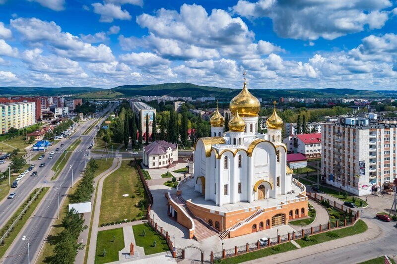

Альметьевск – это четвертый по размерам город Татарстана.
Он расположен по левую сторону реки Зай, на возвышенности, носящей название Бугульминско-Бельбеевской.
Расстояние между городом и столицей региона составляет 265 км.
Когда точно Альметьевск был основан информации не сохранилось,
но некоторые источники дают предположить, что случилось это в первой половине XVIII века.
Основателем населенного пункта является мулла Альмет (это сокращение от его полного имени Аль-Мухаммед).
Согласно найденным письменным источникам самое раннее упоминание поселения датируется 1735 годом.
Одним из них является письмо самого Альмета, которое он отправил полковнику Татищеву.
В нем он сообщал о намерениях восставших, а также грозящей опасности людям Надыровской волости.
Сейчас Альметьевск, также как и большая часть других населенных пунктов юго-восточной части республики,
очень зависим от нефтедобывающей отрасли региона.
Так, в городе находится один из офисов «Татнефти», которая приносит городу основную часть его бюджета.
Здесь также находятся такие крупные предприятия, как:
«Булгарнефть»;
«СМП-Нефтегаз»;
«Крупный трубный завод, выпускающий продукцию для нефтегазопроводных систем»;
Здесь начинается один из крупных нефтепроводов страны, идущих в западную Европу с названием «Дружба»,
а также транзитные нефтепроводы в Самару и Пермь.
За счет того, что добыча полезных ископаемых является основным рода деятельности населения в городе высшие
учебные заведения имеют основную направленность на обучение в этой сфере.
В городе кроме нефтяного института, есть еще институт муниципальной службы и несколько филиалов иногородних ВУЗов.
Также есть и средне-специальное образование, которые представлено такими колледжами, как:
Медицинский;
Политехнический;
Торгово-экономический;
Профессиональный.
Население города составляет более 152 тысяч человек и продолжает неуклонно расти.
За постсоветский период этот показатель увеличился почти на 20 тысяч.
По общей численности населения Альметьевск занимает 118 место.
Здесь работает 4 троллейбусных и более чем 20 автобусных маршрутов.
Для междугородних сообщений используется городской автовокзал, железнодорожная станция Альметьевска,
а также аэропорт Бугульма внутреннего авиасообщения.
Город активно развивается в спортивной сфере. В нем есть дом каратэ и несколько крупных спортивно-оздоровительных комплексов,
принадлежащих двум нефтяным компаниям. Хоккейная команда города «Нефтяник» последние несколько лет становится обладателем
такого спортивного приза, как кубок Братины. Также в 2009 году здесь была создана своя ассоциация воздухоплавателей.
С культурной стороны Альметьевск также имеет свои места, способные удивить туристов.
Так, визитной карточкой города принято считать Каскад прудов.
Сегодня открыто уже семь очередей каскадов, являющихся цельным водно-архитектурным комплексом.
Это очень популярное место для пеших или велопрогулок и излюбленное место местной молодежи.